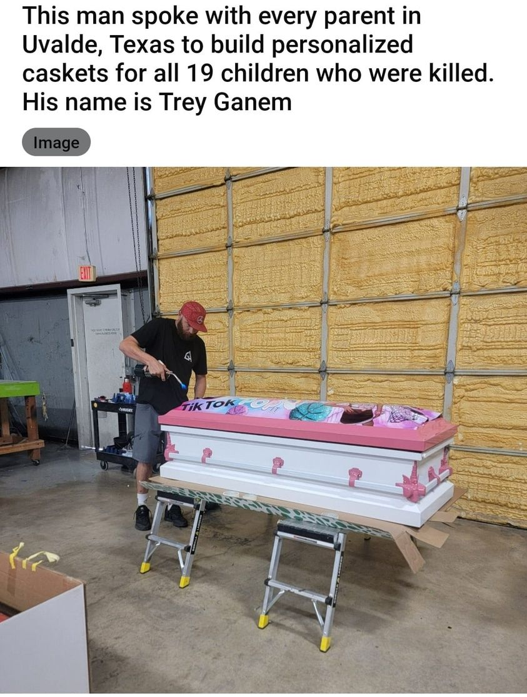

Mobile uploads
Have you heard of Trey Ganem?
He's made personalized caskets for all 19 kids who were killed in the Uvalde massacre.
I NEED YOU TO KNOW, TO DEEPLY UNDERSTAND, that good and bad balance. (in fact, I see so much good in the world that I dare say that the good always wins out. )
I'm not saying that suffering doesn't exist. It most certainly does. What I am saying is that the greater the suffering the greater the good people will GUARANTEE to flock to where the pain and suffering is EVERY time.
Your institutions will fail you but your community never will.